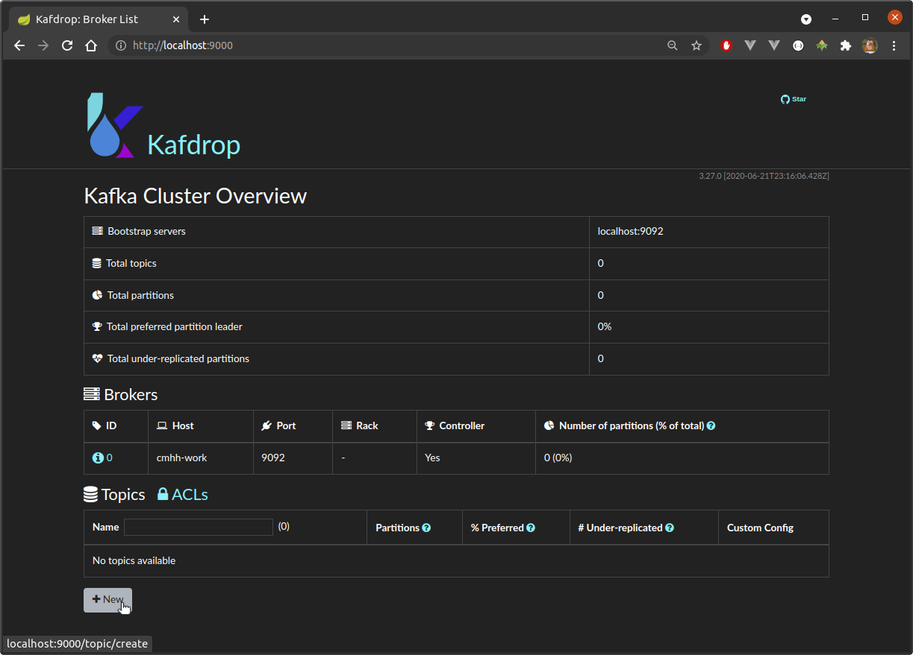
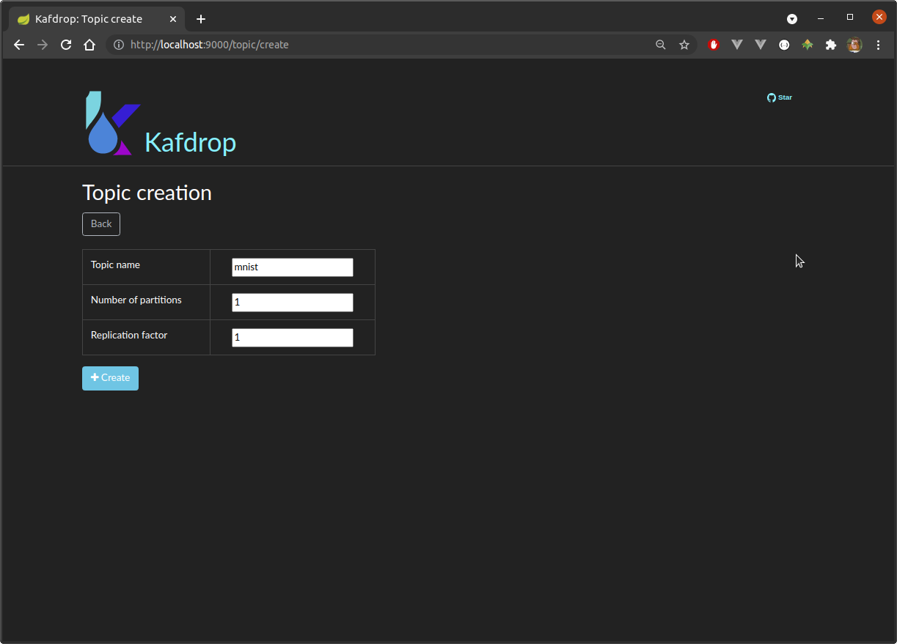
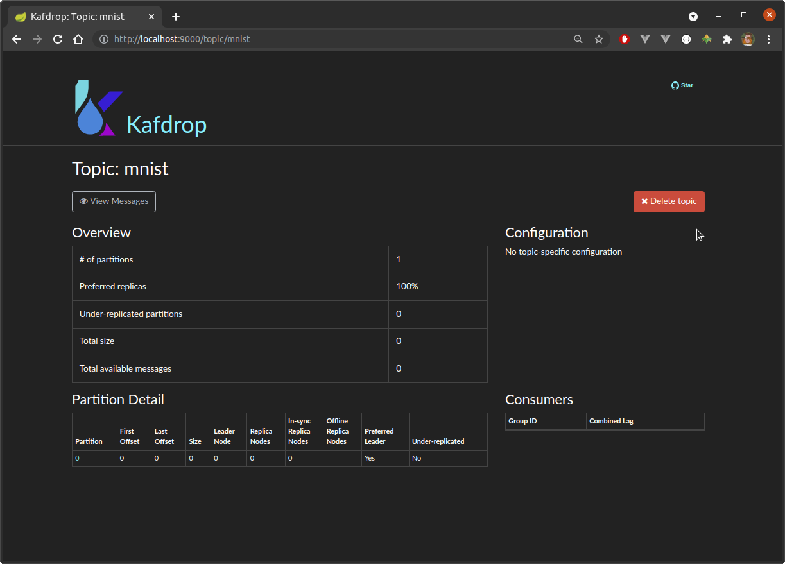
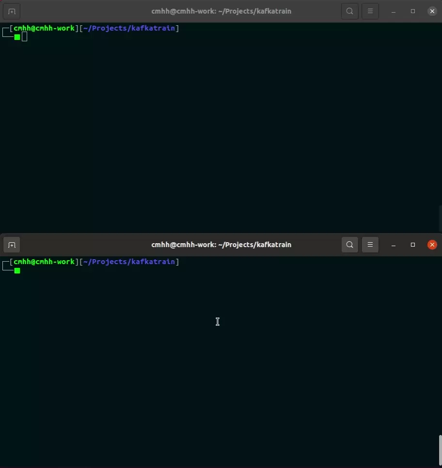
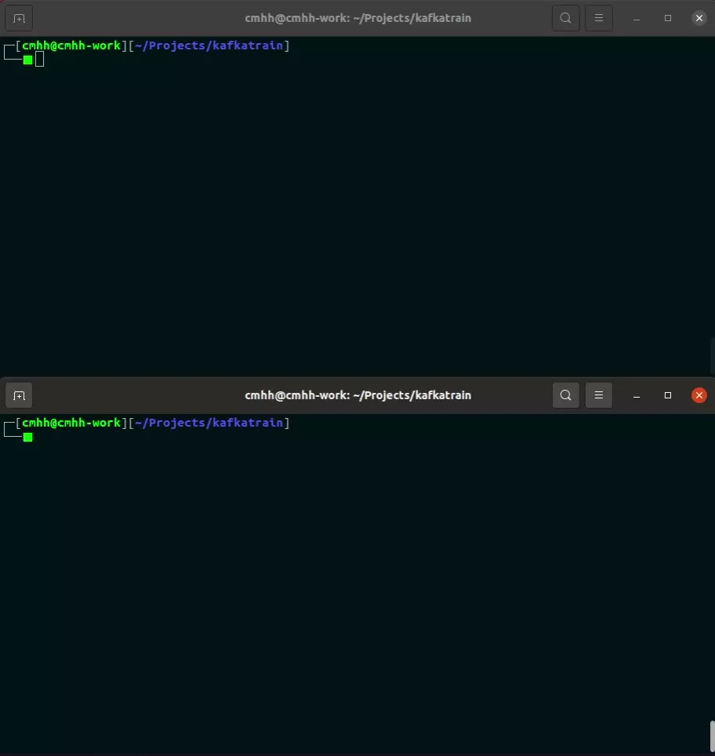

Overview
I recently came across a scenario at work that would, like so many things in practice, be particularly well modelled as an ordered set of events. The messages would have a large number of uses in practice, but one would involve using them to train some sort of predictive model. Moreover, the messages would be arriving in real-time, and the patterns underpinning the messages might well change over time. Based on previous research, Kafka seemed like it would be a good fit, though I don’t yet have a huge amount of practical experience using it. So I decided to create a simplified version of my real use case, and then write it up as a post. We’ll use a producer to read messages in a topic, and a consumer will then read those messages and update our model. If nothing else, the exercise should also serve as a reasonably accessible example of the use of Kafka producers and consumers. Let’s get to it…
Problem Description
We use the popular MNIST database of handwritten digits. The database contains hand-written digits represented as 28x28 pixel arrays with integer values in the range \([0,255]\) representing grey-scale colours. The images are split into training and test sets with 60000 and 10000 images, respectively. The following image contains a collage of randomly selected examples:

Broadly speaking, Kafka consists of topics, effectively partitioned log files. Producers append new messages to topics, and consumers read them. In this demonstration we’ll simply add all the MNIST training images to a Kafka topic, but we’ll throttle the rate at which this is done. At the same time, a consumer will continuously poll the topic and use any messages received to update a simple classifier, and will report model accuracy after each update.
This isn’t a terribly realistic example, and is intended for demonstrative purposes. We’ll work through just one epoch, but we’ll see that training accuracy is indeed improving as new messages are received. In more realistic set-ups we’d probably start with a pre-trained model, and use real-time data to refine our model. Of course, we can replay a log, and so it would certainly be possible to train our model over many epochs if we wished.
Implementation
The complete application can be found on GitHub at cmhh/kafkatrain, and the README includes enough information to get up and running. Note that the repository includes the MNIST database since the data is only 12MB all up, and the original source urges users to ‘Please refrain from accessing these files from automated scripts with high frequency. Make copies!’. Either way, in this section we discuss the most important bits in more detail.
Install and Start Kafka
Even though all the source for this exercise is provided as an sbt project, we still need a running broker. There are a number of ways we can do this, but it will suffice to simply download a pre-compiled bundle from the Kafka website directly. At the time of writing, the most recent version of Kafka is 2.8.0, and it can be downloaded via the following link:
I just downloaded this to the root of the project folder, and unpacked it there, the result being a folder name kafka_2.13-2.8.0. We first start Apache Zookeeper as follows:
./kafka_2.13-2.8.0/bin/zookeeper-server-start.sh \
./kafka_2.13-2.8.0/config/zookeeper.propertiesKafka is distributed, and Zookeeper is used to coordinate the nodes. Note that this function will soon be handled natively by Kafka so will not be a requirement much longer. Either way, we then start our Kafka broker by running:
./kafka_2.13-2.8.0/bin/kafka-server-start.sh \
./kafka_2.13-2.8.0/config/server.propertiesKafdrop is a useful web UI which can be used to monitor Kafka brokers, and we can get this up and running quickly via Docker as follows:
docker run -d --rm \
--net host \
-e KAFKA_BROKERCONNECT=localhost:9092 \
-e JVM_OPTS="-Xms32M -Xmx64M" \
-e SERVER_SERVLET_CONTEXTPATH="/" \
obsidiandynamics/kafdropThe default port is 9000, so we then just visit localhost:9000 to see the following UI:

Create a Kafka Topic
Here, our events or messages will just be instances of the MnistRecord case class, so we need to create a topic to hold them. We can do this at the terminal, assuming our Kafka broker is running, as follows:
./kafka_2.13-2.8.0/bin/kafka-topics.sh \
--bootstrap-server localhost:9092 \
--create --partitions 1 --replication-factor 1 \
--topic mnistTopics can also be added and deleted easily enough via the Kafdrop web UI.


Model Our Messages
The MNIST database consists of handwritten images of 28x28 pixels, each assigned a label from 0 to 9. The image data is easily read from the provided files as an array of bytes in row-major order, so we define a simple case class as follows (the class has a number of methods, but we omit the details here):
case class Image(data: Array[Byte], rows: Int, cols: Int, byrow: Boolean)Note that the byrow parameter is included since I also tested this code with the EMNIST database. This is a database which is intended to largely be a drop-in replacement for MNIST, but with a larger number of categories. However, while the IDX format is used for both, EMNIST appears to store pixels in column-major order, whereas MNIST is in row-major order. Either way, the labelled images can then be modelled simply, also using a case class, as follows:
case class MnistRecord(image: Image, label: Int)The MNIST data has been bundled as a resource in the provided sbt project, and a basic, single-use iterator is provided also. For example, to read the training data:
scala> val testIt = MnistIterator(MnistType.TRAIN)val testIt: org.cmhh.MnistIterator = <iterator>Serialisation / Deserialisation
Messages are transmitted and stored as sequences of bytes, and so we need the ability to convert our messages to byte arrays (serialisation) and back again (deserialisation). The MnistRecord type is relatively simple–our images are already stored as byte arrays, and we just need to append one more byte to account for the image label.
To create a serialiser we mix in the Serializer[T] trait, and we must provide a concrete implementation of method serialize with signature:
def serialize(topic: String, data: T): Array[Byte]To create a deserialiser we mix in the Deserialzer[T] trait, and we must provide a concrete implemenation of method deserialize with signature:
def deserialize(topic: String, data: Array[Byte]): TWe can define everything together in one class, though one needs to take care since the two traits have methods with the same name, so we need to override things just so. The full implementation in this case is:
import org.apache.kafka.common.serialization.{Serializer, Deserializer, Serde, Serdes}
class MnistRecordSerde() extends Serde[MnistRecord]
with Serializer[MnistRecord] with Deserializer[MnistRecord] with Serializable {
override def serializer(): Serializer[MnistRecord] = this
override def deserializer(): Deserializer[MnistRecord] = this
override def close(): Unit = ()
override def configure(configs: java.util.Map[String, _], isKey: Boolean): Unit = ()
val Serde: Serde[MnistRecord] = Serdes.serdeFrom(this, this)
override def serialize(topic: String, data: MnistRecord): Array[Byte] =
data.image.data :+ data.label.toByte
override def deserialize(topic: String, data: Array[Byte]): MnistRecord = {
val m = data.size - 1
val n = math.sqrt(m).toInt
if (n * n != m) sys.error("oops.")
MnistRecord(
Image(data.take(m), n, n, true),
data(m).toInt
)
}
}Producer
Our producer is very simple. In this case it is a standard driver program, and the complete program is as follows:
package org.cmhh
import org.apache.kafka.clients.producer._
import org.apache.kafka.common.serialization._
import scala.jdk.CollectionConverters._
import scala.concurrent.duration.Duration
import scala.concurrent.{Await, Future}
import scala.concurrent.ExecutionContext.Implicits.global
import scala.util.{Success, Failure}
import java.util.Properties
object ProducerApp extends App {
val delay = if (args.size > 0) args(0).toInt else 0
val trainIt: MnistIterator = MnistIterator(MnistType.TRAIN)
val n = trainIt.size
val props = new Properties()
props.put("bootstrap.servers", "localhost:9092")
props.put("key.serializer", "org.apache.kafka.common.serialization.StringSerializer")
props.put("value.serializer", "org.cmhh.MnistRecordSerde")
val producer = new KafkaProducer[String, MnistRecord](props)
print("\n\nSending messages...\n\n0.0%...")
val res = Future.sequence(trainIt.zipWithIndex.map(rec => {
val msg = new ProducerRecord[String, MnistRecord](
"mnist",
s"%05d".format(rec._2),
rec._1
)
if ((rec._2 + 1) % (n / 10) == 0)
print(s"${(rec._2 + 1).toDouble / n * 100}%... ")
if (delay > 0) Thread.sleep(delay)
Future { producer.send(msg).get }
}))
Await.ready(res, Duration.Inf)
print("\n\nDone.\n\n")
}We first create an instance of KafkaProducer, which is responsible for publishing our messages. This client object requires a configuration in order to be initialised, in this case an instance of Properties. Our properties include the address of our broker, as well as the serialisation classes for our keys and for our messages. In this case, our message keys will be the strings 00001 through 60000, and they’ll be serialised via StringSerializer. Our messages are, of course, MnistRecord, and they’ll be serialised using the custom serialiser MnistRecordSerde. Otherwise, the driver program simply iterates over the training set, sending each, and then waiting some amount of time in milliseconds before moving on to the next, and we are notified on standard output how far we are through the full set in 10 percentage point increments. Messages are published by calling the send method of our KafkaProducer. This is asynchronous, and returns a Java-style Future, which we then convert to a Scala Future for slightly more idiomatic use.
Consumer
Our consumer is a little more complicated. First, we initialise a simple neural network using the Deeplearning4j library. The complete setup is as follows:
def cnn(learningRate: Double = 0.01, seed: Int = 1234): MultiLayerNetwork = {
val architecture = new NeuralNetConfiguration.Builder()
.seed(seed)
.updater(new Sgd(learningRate))
.weightInit(WeightInit.XAVIER)
.l2(1e-4)
.list()
.layer(0, new ConvolutionLayer.Builder(3, 3)
.stride(2,2)
.padding(1,1)
.nOut(32)
.activation(Activation.RELU)
.build()
)
.layer(1, new SubsamplingLayer.Builder(SubsamplingLayer.PoolingType.MAX)
.kernelSize(2,2)
.stride(1,1)
.build()
)
.layer(2, new DenseLayer.Builder()
.nOut(100)
.activation(Activation.RELU)
.build()
)
.layer(3, new OutputLayer.Builder(LossFunctions.LossFunction.MCXENT)
.nOut(10)
.activation(Activation.SOFTMAX)
.build()
)
.setInputType(InputType.convolutionalFlat(28, 28, 1))
.build
val network = new MultiLayerNetwork(architecture)
network.init()
network
}We’re not aiming for best-in-breed here–just something that we can train reasonably quickly, and which shows increasing accuracy as more of the topic is consumed. The full consumer application then looks as follows:
package org.cmhh
import org.apache.kafka.clients.consumer._
import org.apache.kafka.common.serialization._
import scala.jdk.CollectionConverters._
import scala.concurrent.duration.Duration
import scala.concurrent.{Await, Future}
import scala.concurrent.ExecutionContext.Implicits.global
import scala.util.{Success, Failure}
import java.util.Properties
import java.time.{Duration => JDuration}
import org.nd4j.evaluation.classification.Evaluation
object ConsumerApp extends App {
val t = new Thread {
override def run: Unit = try {
val props = new Properties()
props.put("bootstrap.servers", "localhost:9092")
props.put("key.deserializer", "org.apache.kafka.common.serialization.StringDeserializer")
props.put("value.deserializer", "org.cmhh.MnistRecordSerde")
props.put("group.id", "mnist-train")
props.put("auto.offset.reset", "earliest")
props.put("enable.auto.commit", false)
val consumer = new KafkaConsumer[String, MnistRecord](props)
consumer.subscribe(java.util.Collections.singletonList("mnist"))
val network = model.ann()
val mnistTest = new MnistDataSetIterator(100, MnistType.TEST)
while (true) {
val recs = consumer.poll(JDuration.ofMillis(1000))
if (recs.count() > 0) {
val it = recs.iterator
while(it.hasNext) {
val im = it.next().value.toNd4j
network.fit(im._1, im._2)
}
val eval = network.evaluate[Evaluation](mnistTest)
println(
f"number read: %%d, accuracy: %%1.4f".format(recs.count(), eval.accuracy)
)
}
}
} catch {
case e: Throwable =>
println("Program terminated.\n\n")
println(e.getMessage())
}
}
t.start
scala.io.StdIn.readLine("\n\nPress ENTER to stop...\n\n")
t.interrupt()
t.join()
}To retrieve messages from a topic, we need a KafkaConsumer object. We pass a basic configuration on instantiation which includes the address of our Kafka broker, the deserialisers for our keys and messages (which are of type MnistRecord), and we also ensure we read the topic from the start. Once the KafkaConsumer, consumer, is created, we subscribe to the mnist topic. Then, we poll the topic continuously for 1 second at a time, and use all the messages retrieved in that time to update our neural network. At the end of each loop, we report how many cases were retrieved, and how the model accuracy has changed as a result. We place the whole loop on a separate thread, mostly so we can wait for users to terminate the program by pressing ENTER.
Note that Deeplearning4j does provide iterators for the MNIST database, but here we’ve rolled our own simple version. In part this is because Deeplearning4j is but one choice we could have made for the machine learning component, but also because it’s instructive to see how one goes about creating such iterators using the traits provided–in useful real-world scenarios, our data won’t be pre-bundled, and we’ll have no choice.
Note also that while our neural network is simple enough, we run our test set through the model frequently, and without a GPU back-end this will be quite slow. On my machine I have an NVIDIA GeForce GTX 1650 Mobile / Max-Q GPU with 4GB of memory, and an Intel i7-9750H (12) @ 4.500GHz CPU. The training set of 10,000 images takes around 100 seconds to evaluate using the CPU back-end, but about 1.3 seconds using the GPU. At the very least one should probably change the settings so more messages are consumed on each iteration if using CPU–or simply don’t evaluate the test accuracy at all.
Results
To demonstrate the application, we start the consumer and producer applications each in separate terminals. In the first case, we send a new record to our topic every 10 milliseconds or so. Once the topic has records in it, our consumer starts printing out the learning progress. The rate at which we add new messages dictates our consumer processes about 20 or so new images for each 100 millisecond iteration.

If we just load all the images into our topic as fast as we can, we find our consumer processes 500 records for every 100 millisecond iteration. This is because the consumer configuration parameter max.poll.records has a default value of 500, and we have not changed it.

Summary
In this post we demonstrated the basic usage of a producers and consumers when working with Kafka, including important considerations such as serialisation and deserialisation of our message types. The specific use-case for our consumer here, while not a great example of a useful real-world scenario, was to continuously update a classifier in real-time as new messages were received. There are a number of extensions that one could consider to make this more interesting, of course–we could develop web interfaces for creating new messages and append them to our topic, we could serialise our classifier for offline use, and so on. In an upcoming post we’ll replicate most of what was done in this post, but using Akka actors rather than Kafka.